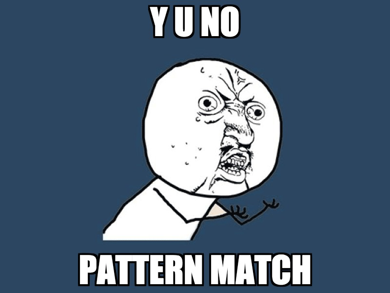

Kotlin R&D day
Hamza Haiken (who also made the tool, blame him for bugs)
David Hoepelman
Donovan de Kuiper
15 April 2016
Built by Showtime
Follow along
Link to the slides
Contents
What is  Kotlin
Kotlin
- New language by Jetbrains
- Meant to convert Java devs
- Design goals:
- Concise
- Safe (Static typing, no nulls)
- Versatile (JVM, Android, Browser)
- Interoparable (with Java)
Comparison to Scala
Same
- No-semicolons
- Expression-based
- Backpacks to escape keywords/spaces
- Covariant/contravariant generics
- Default arguments
- Operator overloading
- Unchecked exceptions (even from Java)
- Companion objects
- Type interference (local)
- Override modifier
-
Constructor syntax
class Foo(arg: val), also fields. - Class iniatilization blocks (explicit)
-
Operators collection (
x[a] ==> x.get(a)) -
Apply method (
x() ==> x.invoke()) - Multiple constructors have to call the primary
- Algebraic Data Type / Sealed classes
- Val/var immutable/mutable
- Mutable and immutable classes
- Range literals
- Collections immutable by default
- No multiple inheritance, ut with interface
- Flatmap
- Data class/case class (automatic equals/hascode etc.)
- Static typing
- Unit
Different
- Override modifier even for interface/trait implementations
- Explicit return (unless
Unit) - Classes and methods are sealed/final by default (same as C++, C#)
whenexpressions instead ofswitchorif-elsetrees
when(x) {
1, 2 -> println("1 or 2")
3 -> println("That's a 3")
else -> println("TODO: add all other numbers")
}Different2
- No
newkeywordval x = MyClass() - No fields, always properties (backing fields can be accessed if necessary)
- Far less generic
fun x() { 1 }
fun y(a: Int) { a }
x + 1 // Nope
x() + 1
(1..10).map(y) // Nope
(1..10).map(::y)- Lots of specialized keywords
Keywords
operatorvarargopeninternaldataannotationtailrecinlineinfixcompanion...
Better
- Java Interop
- Java Enums
- Explicit inlining (scala 2.12 has some inlining)
- Extension methods
infix fun Int.myFancyPlus(other : Int) {
return this + other
}
1 myFancyPlus 2Better
- Null safety
val x : Int = null // Compile error
val y : Int? = null
val a = y.?call() // Null propagation, a = null
val b = y ?: -1 // Elvis operator
val c = y!!.call() // throws NPE if nullWorse/missing

- Pattern matching
when(e) {
Foo(1,2) -> // Works because Foo implements equals
Foo(a,b) -> // Doesn't compile
}
val (a,b) = Foo(1,2) // "alternative"Worse / Missing
- Implicits, implicit conversions
- Macros
- Special characters in methods (
route ~ index) - Value types (planned)
- Type classes
- Traits (java 8 style interfaces instead)
- Lazy keyword
- For comprehensions
Overview
Pro:
- Good Java interop
- Easy mixing Java and Kotlin
- Easier transition from Java
- Good IDE support
- Small runtime
Cons:
- Way less advanced than Scala
- No ecosystem
- You’re stuck to Jetbrains/IntelliJ
- Unknown long-term language viability
if you are happy with Scala, you most likely do not need Kotlin
Questions
?
Thank you